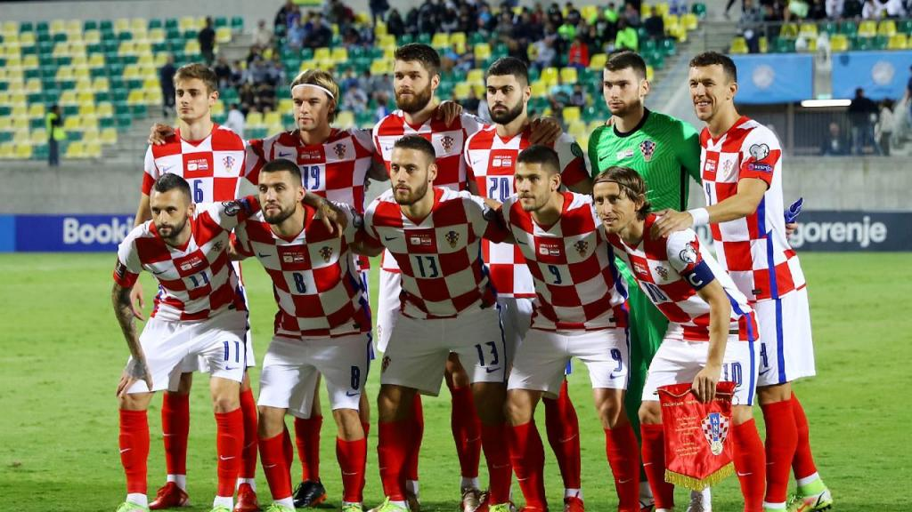

Seleção da Croácia em Copas do Mundo
A seleção croata participa de sua quinta edição da Copa do Mundo de futebol em 2018. Em 1998 a Croácia participou de sua primeira Copa do Mundo de futebol como país independente da Iugoslávia e chegou ao 3º lugar da competição, sua melhor participação em mundiais até então. Nas duas Copas do Mundo seguintes a Croácia foi eliminada na Primeira Fase. Em 2010 não se classificou nas eliminatórias e em 2014 foi eliminada na Primeira Fase do Mundial de futebol. Em 2018, a Croácia chegou a sua primeira final e com a derrota para a França ficou com o vice- campeonato mundial, sua melhor participação nas Copas do Mundo.
A seleção de futebol masculino da Croácia é conhecida como Vatreni. A Federação Croata de Futebol foi fundada em 1912 como parte da Federação de Esportes Croata. A Croácia era parte na época do Império Austro-Húngaro. Em 1941, a Croácia se filiou à FIFA como federação do Estado Independente da Croácia (estado fantoche da Alemanha Nazista).
Após a Segunda Guerra Mundial, a Croácia se tornou novamente parte da Iugoslávia. Após a Croácia ter se tornado independente em 1991, a Federação Croata de Futebol buscou o reconhecimento internacional, e foi finalmente readmitida pela FIFA em 1992 e pela UEFA em 1993.
